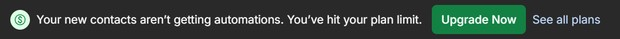
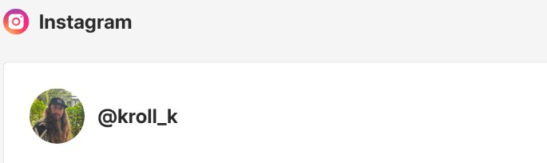
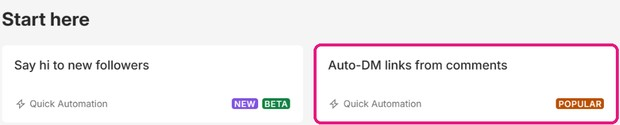
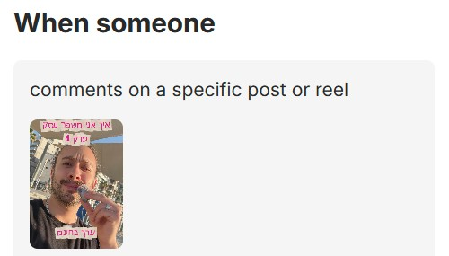
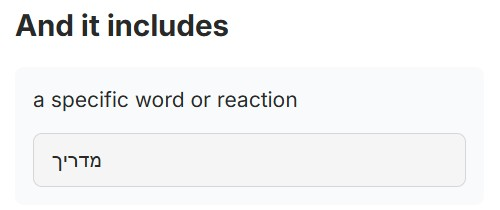
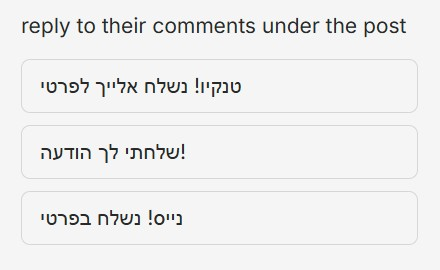
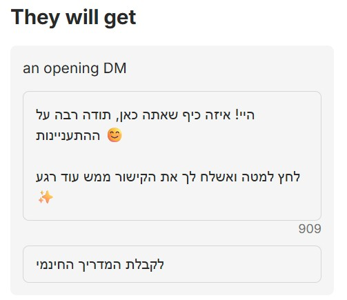
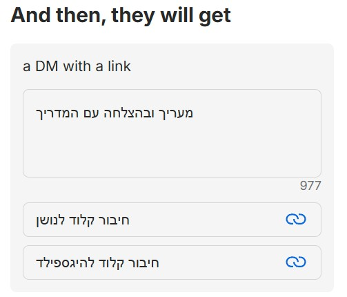
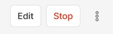
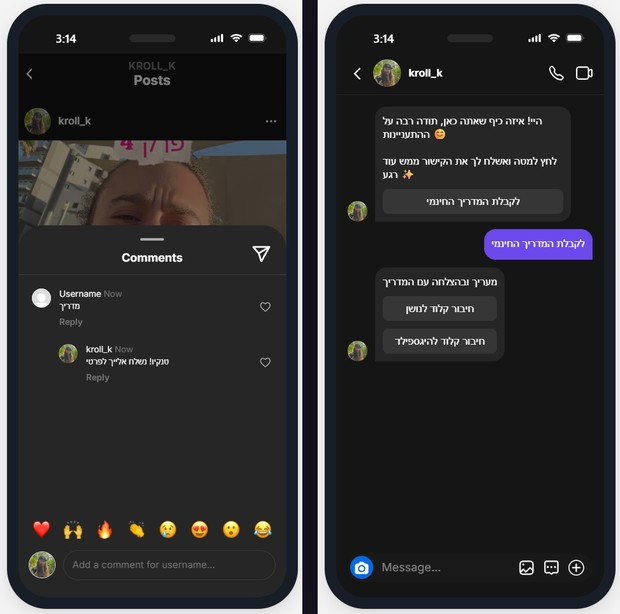

Reply 1
"שלחתי לכם בפרטי 📩 לא רואים? תבדקו בבקשות ההודעות."
מדריך קצר לאוטומציה של ManyChat: תגובה על פוסט שהופכת להודעה פרטית עם לינק
אם הגעתם לכאן, הגבתם על סרטון וקיבלתם את המדריך אוטומטית בהודעות. זה המנגנון שתבנו עכשיו.
בסוף יהיה לכם פוסט שכל מי שמגיב עליו מילה מסוימת מקבל הודעה פרטית עם לינק, בלי שתצטרכו לענות לאף אחד ידנית.
ManyChat סופרים אנשי קשר פעילים: כל מי שקיבל מכם הודעה דרכם בחודש נספר פעם אחת, והספירה מתאפסת כל חודש. מספר העוקבים לא משנה.
| Free | Essential | Pro | |
|---|---|---|---|
| מחיר לחודש | חינם | $17 | $39 |
| אנשי קשר בחודש | 25 | 250 | 2,500 |
| אוטומציות פעילות | עד 4 | ללא הגבלה | ללא הגבלה |
| הודעת Powered by | מופיע | לא | לא |
מה קורה ב-Free אחרי 25? ManyChat מציגים את ההודעה הזו: אנשי קשר חדשים כבר לא מקבלים את האוטומציה, עד שהספירה מתאפסת או שמשדרגים.

יש עוד דרכים להתחבר, דרך Meta. אני התחברתי דרך אינסטגרם, בלי דף פייסבוק ובלי חשבון עסקי של Meta, וזה הכי פשוט.
כשזה מחובר, ב-Settings ואז Instagram מופיע החשבון שלכם:

תוודאו שהחשבון מקצועי ושה-Allow access to messages דלוק. ב-ManyChat: Help ואז Refresh permissions. אם כתוב Request Sent במקום Connect, החשבון כבר מחובר ל-ManyChat של מישהו אחר, ומי שחיבר אותו צריך להעביר אליכם את הבעלות.
ל-ManyChat יש תבנית מוכנה בדיוק לזה: Auto-DM links from comments. היא נמצאת ב-Home, תחת Start Here. או: Automations, ואז New Automation.

A specific post or reel לפוסט אחד, Any post or reel לכל הפוסטים, או Next post or reel לפוסט הבא שתעלו.

המילה שהתגובה צריכה לכלול. מילה אחת, קצרה, קלה להקלדה בטלפון, ושלא סביר שמישהו יכתוב סתם.

תשובה שמופיעה מתחת לתגובה, כדי שהאדם ידע שראו אותו. אפשר עד שלושה נוסחים, ו-ManyChat מחליף ביניהם.

Opening DM: הודעה קצרה עם כפתור, לפני הלינק. מי שלוחץ מאשר שהוא רוצה לדבר איתכם, ומשם אפשר לשלוח לו עוד הודעות במשך 24 שעות. בלעדיה אין בקשת מעקב, בקשת מייל או תזכורת.

טקסט ועד שלושה לינקים. קובץ? מעלים לגוגל דרייב או לדף ציבורי בנושן, ושולחים לינק. תוודאו שהוא פתוח לכל מי שמקבל אותו.
אופציונלי, לפני הלינק: בקשה לעקוב ובקשת מייל. ואחריו: תזכורת למי שלא לחץ.

למעלה מימין. אחרי שהאוטומציה באוויר, באותו מקום מופיעים Edit לשינויים ו-Stop לעצירה.

"שלחתי לכם בפרטי 📩 לא רואים? תבדקו בבקשות ההודעות."
"המדריך מחכה לכם בהודעות. אם אתם לא עוקבים, הוא בבקשות."
תגדירו כל אוטומציה על הפוסט שלה, עם A specific post or reel. ככה כל פוסט שולח את המדריך שלו, גם אם המילה זהה.
הודעה אחת לכל תגובה, עד 7 ימים. את ההמשך אפשר לשלוח רק אחרי שהאדם עונה או לוחץ על כפתור. בשביל זה הודעת הפתיחה.
רק התגובה הראשונה. מי שמגיב שוב על אותו פוסט לא יקבל הודעה שנייה. זו מגבלה של אינסטגרם, לא של ManyChat.
איפה ההודעה נוחתת. אצל מי שעוקב, בתיבה הראשית. אצל מי שלא, בבקשות ההודעות.
ספאם. כמה נוסחים שונים לתגובה הציבורית, להחליף אותם מדי פעם, ולא לענות רק באימוג'י. ו-Meta ממליצים לציין בהודעה שהיא אוטומטית.
עוד לפני שמגיבים, בלשונית Preview של האוטומציה רואים איך התגובה וההודעות ייראו בטלפון:

אחרי שזה באוויר, בלשונית Insights של האוטומציה רואים כמה הודעות נשלחו (Sends), כמה לחצו על הלינק (Clicks) ואת האחוז (CTR).